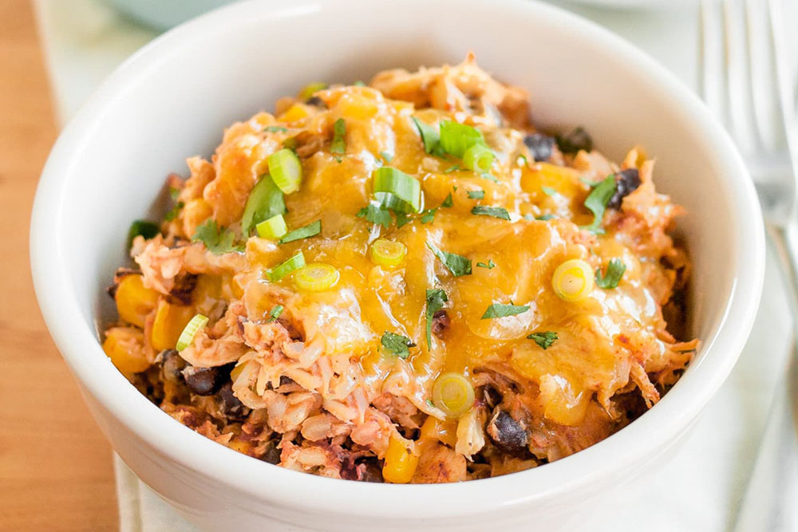

Chicken Burrito Bowls

Description
This meal is an absolute go-to for busy weeks when you need something filling, nutritional and tasty.
This is another meal that can easily cover two or even three nights of dinners due to the large amount made in the Instant Pot.
Once again, rice and beans forms the foundation here, with some fresh flavors and texture added with the cilantro and chicken.
Ingredients
- Fresh Bunch Cilantro
- 1 Tablespoon Oil
- 1 1/2 teaspoons Cumin
- 1 Cup White Rice Uncooked
- 2 1/4 Cups Chicken Broth
- 4 ounce Green Chiles Diced
- 1/3 Cup Cilantro Chopped
- 1 Can Pinto Beans Drained
- 1 Cup Colby Jack Cheese Shredded
Directions
- Heat an instant pot to the saute high mode. Add the oil.
- Mix all of the seasonings together and toss with the chopped chicken until well coated.
- Add the chicken to the pot and cook, stirring occasionally until golden, about 3 minutes.
- Add the rice and garlic and stir for 20-30 seconds. Add the broth, chiles, cilantro, lime zest and juice. Stir and add the beans, stirring again.
- Add the lid and set the valve to "seal". Turn the pot to high pressure for 7 minutes.
- Allow a natural release for 2 minutes then quick release.
- Stir the rice well and top with cheese. Add the lid back on for a minute to melt the cheese.
- Serve with toppings and enjoy!